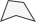

Delete Face
Keyboard Shortcut : BACKSPACE
Deletes the selected face(s).

Detach Face
Detach the selected face(s) to a new sub-mesh, or separate object.
 Custom Settings Available :
Custom Settings Available :
| Setting | Description |
|---|---|
| Detach To New Object | If On, the face(s) will be detached to a new, separate object. Otherwise, they will be detached to a sub-mesh within the original object. |
 Extrude Face
Extrude Face
Keyboard Shortcut : SHIFT DRAG
Creates a new face by pulling out the currently selected face and attaching sides to each edge.
You can also extrude by holding SHIFT while moving, rotating, or scaling the faces.
 Custom Settings Available :
Custom Settings Available :
| Setting | Description |
|---|---|
| Face Normals | Extrudes each selected Face according to it's own surface direction, and adjacent faces remain connected. |
| Vertex Normals | Extrudes selected Faces by Vertex normals. Adjacent Faces remain connected. |
| Extrudes each selected Face according to it's own surface direction, however adjacent faces do not remain connected. | |
| Distance | Distance to extrude the selected faces(s). |
Flip Normals
Flips the normals on the selected face(s).
Flip Face Edge
Swap the triangle orientation on the selected face(s). This will only work on quads (faces with 4 sides).
Conform Normals
Sets all selected face normals to the same relative direction.
 Merge Faces
Merges selected faces into a single face, and removes any dividing edges.
 Subdivide Faces
Subdivide Faces
Split each selected face by adding a vertex at the center of each edge and connecting them in the center.

 Bevel Faces
Bevel Faces
Performs the Bevel Edge action on all the edges of the selected face(s).

 Custom Settings Available :
Custom Settings Available :
| Setting | Description |
|---|---|
| Distance | Sets the distance each new edge is moved, from the position of the original. |
 Triangulate Faces
Triangulate Faces
Reduces selected faces to their base triangles, creating a faceted, non-smooth appearance.